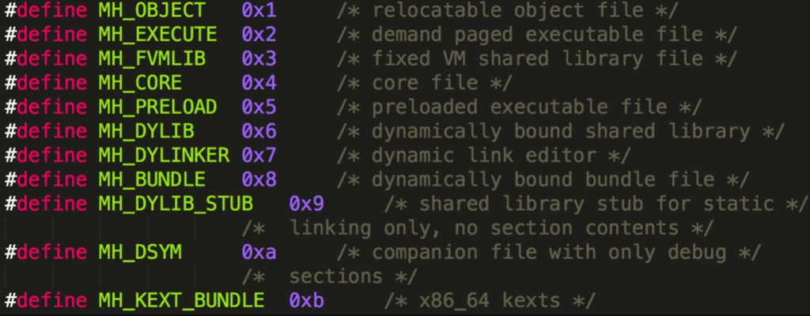
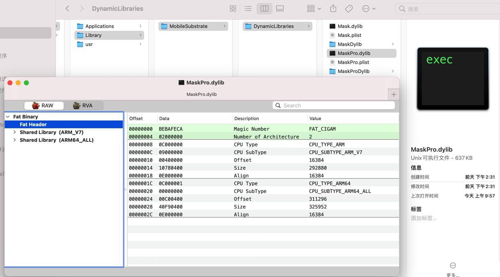
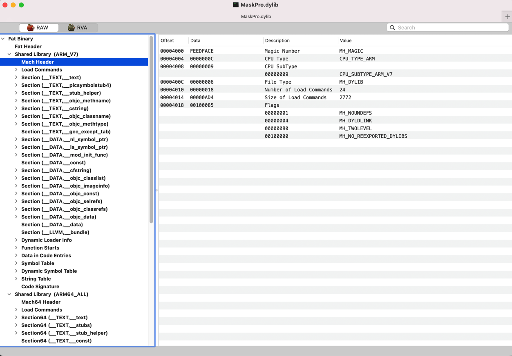
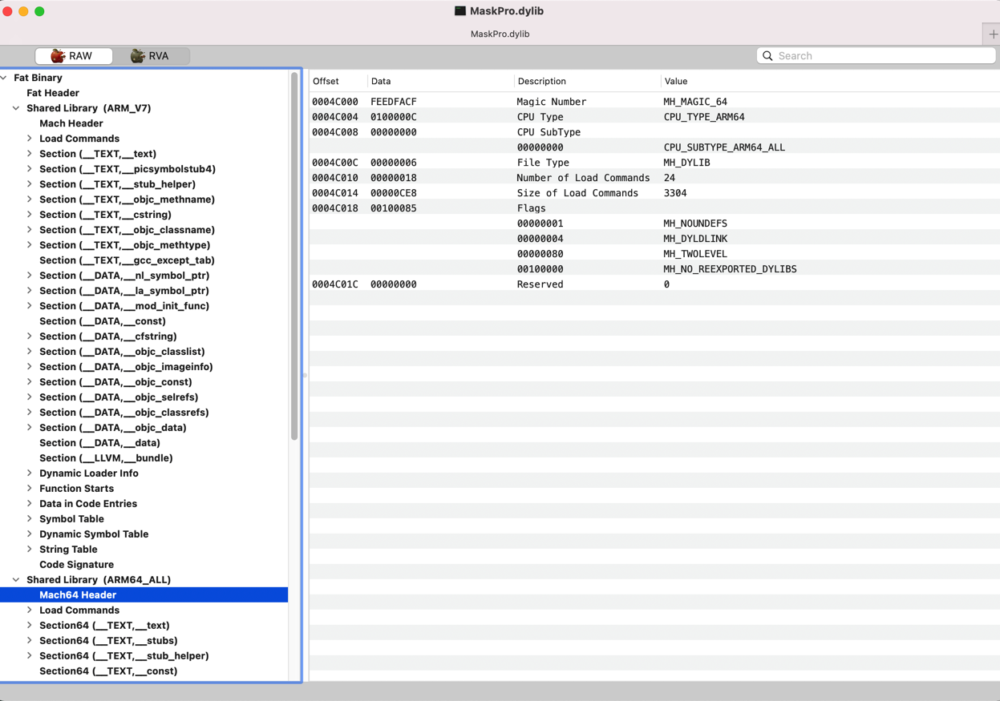

Mach-O
TODO：
【记录】静态分析Mask的动态库：MaskPro.dylib
Mach-O- 名称来源：
Mach Object的缩写 - 是什么：
Apple的Mac、iOS等平台的二进制程序、库等可执行文件的底层文件数据格式 - 常见文件类型
- 图
- 
- 文字
MH_EXECUTE=可执行文件=executable=应用- 文件：
.app/xxx
- 文件：
MH_OBJECT- 目标文件
- 文件：
.o
- 文件：
- 静态库文件=静态链接库=
static library：N个.o合并在一起- 文件：
.a
- 文件：
- 目标文件
MH_DYLIB=动态链接库=dylib library：类似于Win中的DLL- 文件：
.dylib、.framework/xxx
- 文件：
MH_DYLINKER：动态链接编辑器- 文件：
/usr/lib/dyld
- 文件：
MH_DSYM：存储着二进制文件符号信息的文件- 文件：
.dSYM/Contents/Resources/DWARF/xxx- 常用于分析APP的崩溃信息
- 文件：
- 图
- 基本结构
Header：文件类型、目标架构类型等Load commands：描述文件在虚拟内存中的逻辑结构、布局Raw segment data：在Load commands中定义的Segment的原始数据
- 详细定义
- 详见：xnu源码
- https://opensource.apple.com/tarballs/xnu/
EXTERNAL_HEADERS/mach-o/fat.hEXTERNAL_HEADERS/mach-o/loader.h
- https://opensource.apple.com/tarballs/xnu/
- 详见：xnu源码
- 相关工具：查看和处理Mach-O格式的文件
- 查看信息
file：查看Mach-O的文件类型file inputMacOFile
MachOViewjtool2/jtoolotool：查看Mach-O特定部分和段的内容lipo：常用于多架构Mach-O文件的处理- 查看架构信息：
lipo -info inputMacOFile - 导出某种特定架构：
lipo inputMachOFile -thin ArchType -output OutputFile - 合并多种架构：
lipo inputMachOFile1 inputMachOFile2 -output OutputFile
- 查看架构信息：
rabin2
- 逆向处理
- 导出头文件
class-dump
- 导出头文件
- 查看信息
- 名称来源：
FAT Binary=胖二进制
Fat Binary=胖二进制=Fat File=胖二进制文件=Universal Binary=通用二进制文件- 把多个架构的二进制（比如
armv7、arm64等）合并在一起，成了个胖子，所以叫Fat Binary- 一个由不同的编译架构后的
Mach-O产物所合成的集合体 - 一个架构的
Mach-O只能在相同架构的机器或者模拟器上用 - 为了支持不同架构需要一个集合体
- 一个由不同的编译架构后的
- 文件大小
- 一般比单一架构的文件要大
- 但是由于多架构会共用一部分资源，所以往往比多个（常常是2个）的总大小要小
- 把多个架构的二进制（比如
胖二进制的实例
折腾Mask的dylib期间就遇到了FAT Binary：
➜ DynamicLibraries jtool2 -h MaskPro.dylib > MaskProDylib/MaskProDylib_jtool2_h_header.txt
Fat binary, little-endian, 2 architectures: armv7, arm64
Select an architecture setting the ARCH= environment variable
即，一个Dylib中，包含了多种架构，此处是armv7和arm64
此处要指定具体架构，才能继续用jtool2查看信息：
➜ DynamicLibraries export ARCH=arm64
➜ DynamicLibraries jtool2 -h MaskPro.dylib > MaskProDylib/MaskProDylib_jtool2_h_header.txt
类似的，后续去用MachOView查看信息，也能看到是：FAT Binary
- 
- ARMV7
- 
- ARM64
- 
- ARMV7